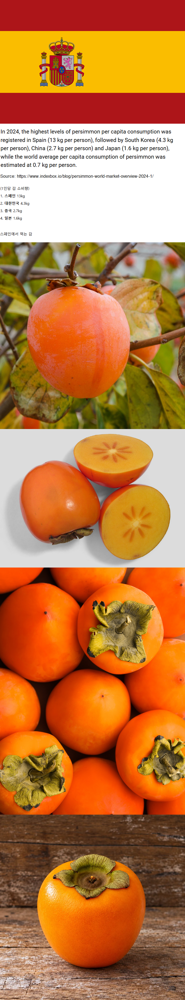

쟤네는 게를 안 먹나
유럽권 애들 안먹지 않아?ㅋㅋㅋㅋ 이탈리아 애들 해물파스타 이런거 보면 조개만 넣고, 바다에 청게 존나 골치거리잖음 ㅋㅋㅋㅋ우리였으면 청게로 청게파티 열릴텐데
암튼 저쪽애들은 식문화가 살짝 비슷해서 그런 편견이 있네 ㅋㅋㅋㅋ
스페인은 다른 유럽권과는 달리 문어도 먹고 해산물 많이먹어서
게도 먹을만한데
감봤으? 그래서 감바스구나

아하 그래서 감바스를 먹는 거였군?

대봉같네 ㅋㅋㅋ 중국도 일본도 아니고 머나먼 물건너 바다건너 스페인에서 감 그렇게 먹는게 신기하다
위에 드립치는 애들 엉덩이에 감 꽂아주고싶다
원래 찐따새끼들 4절 넘어서 뇌절에 큰절까지 하는거 일상이잖아
앙앙 감
쟤네도 곳감 있을까
소비량이 4키로나 된다고?
나 곶감 홍시는 먹는데 생감은 못 먹겠음; 막 정액냄새 같은거 나지 않냐?,....ㅠㅜ
말랑말랑한 감 맛있음. 냄새는 잘 모르겠는데
특유의 떫은맛이 그리 느껴지는가
그 냄새가 나는게 있긴해 ㅋㅋ 그게 근데 껍질에서 보통 나는거같더라고 그래서 껍질 까면 괜찮음
오히려 좋은거 아닌가? 왜못먹지
스벌.
너 때문에 나 이제 생감 못 먹을 듯.
생감을 먹어서 그렇지 단감을 먹어야지
네가 감 잘하는 집을 안 가봐서 그래
정액을 먹어요?
곶감 지금감 나중에감
찾아봤더니 스페인어로 감이 caqui 인데 이게 일본어 かき에서 온 거라네
원래 먹지도 않던 나중에 들여온 과일을 저렇게 많이 먹는게 신기하네
우리나라 고추도 그런거지 뭐...
태추단감 누가 줘서 먹어봤는데 개맛있더라 달고 아삭함
감먹으면 변기걸려서 잘안먹음 난 종류불문 걍 다 잘안나오더라
요새 인스타에서 과일 가끔 사는데 태추단감 요게 아주 괜찮음 대봉이나 일반 단감과는 다르게 배랑 비슷한 느낌
감은 그렇게 많이 먹을만한게 아닌데 변비바로온다
푸른과 섞어 먹으면 괜챦나?
푸룬주스가 이길 것 같은데
게장수출 마렵네
뿡뿡이 난 안좋아함..
와 스페인 감 품종은 씨가 없어? 부럽네
사과 > 감 > 배
ㅇㅈ?
스페인 미친
근데 그럼 스페인 애들은 존나 변비 개심해야하는 거 아니냐?
나는 감 좋아해도 변비걸릴까 무서워서 많이 안먹는데
그런 당신을 위해 준비되어있는 푸룬주스
주변국은 또안먹나보네 특이하다